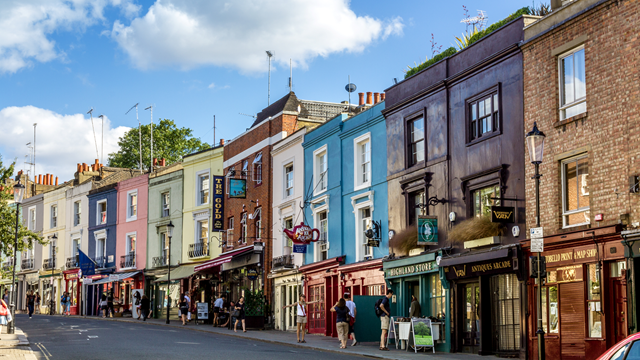
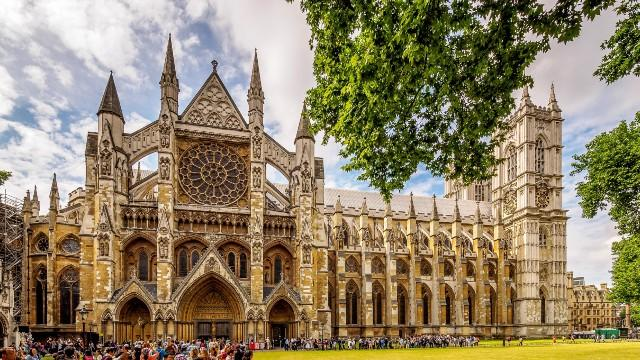
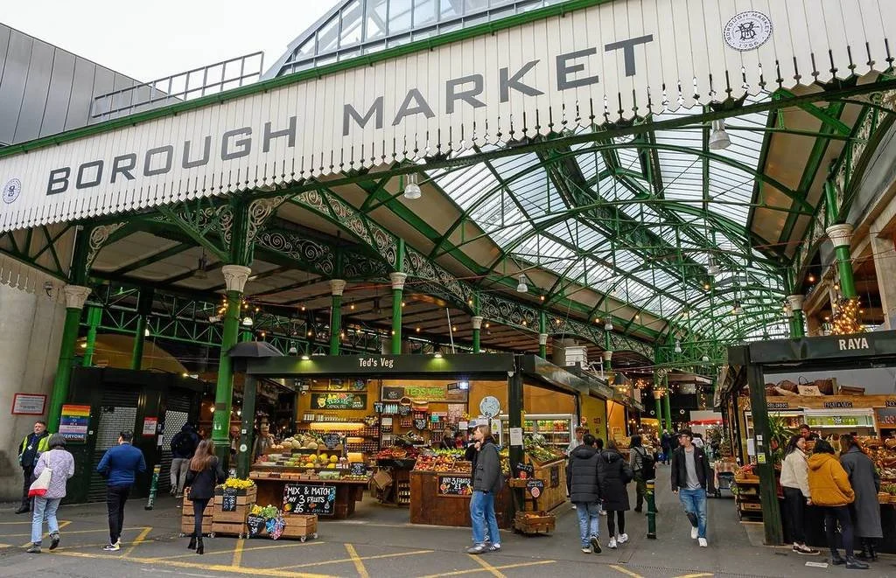
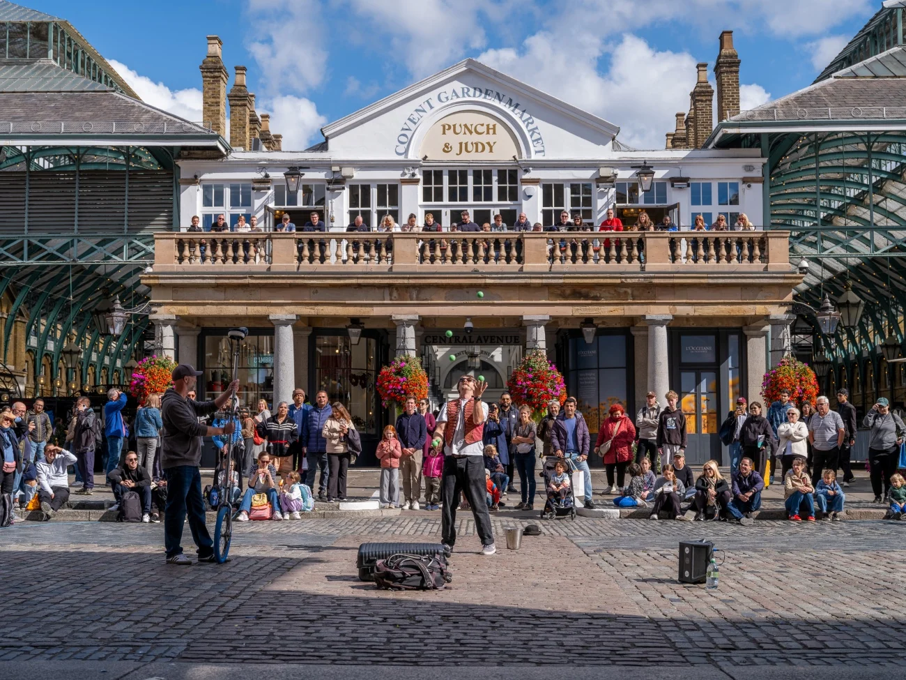
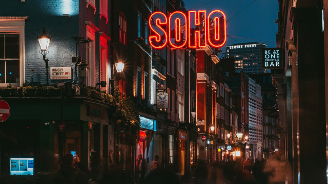

One perfect day, from your first morning stroll to your last Tube home.

Begin your morning among the colorful houses and charming streets of Nottingham Hill. Wander down Portobello Road, stop for breakfast, and explore the neighborhood's shops and market stalls before heading into central London.

Head toward the Thames to see some of London's most recognizable landmarks. Walk past Big Ben and Westminster Abbey, then cross the river to take in one of the city's most famous views.

Stop for lunch at Borough Market, where colorful stalls are filled with food from London and around the world. Grab something that catches your eye and explore the market beneath its historic railway arches.

Spend the afternoon in Covent Garden, where historic buildings, shops, cafes, and street performers fill the neighborhood. Wander through the market before making your way toward the West End for the evening.

When the sun goes down, London is far from finished. End your day in Soho, surrounded by restaurants, theatres, music, and glowing streets that show a completely different side of the city.
Learn more about london through these helpful websites:
Ready to start your London adventure?